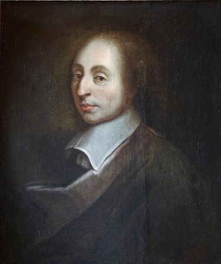

Ki volt Blaise Pascal?
Blaise Pascal (1623–1662) francia matematikus, fizikus, feltaláló, filozófus és teológus volt. Fiatal korában kitűnt zsenialitásával, és egész életében forradalmi újításokat hozott a tudományban és a filozófiában.
Fontosabb eredményei
- Feltalálta az első mechanikus számológépet, a **Pascalinát**.
- Leírta a Pascal háromszöget, amely az algebra és kombinatorika alapja.
- A valószínűségszámítás megalapítása Pierre de Fermat-tal közösen.
- A hidrosztatikai nyomás tanulmányozása és a Pascal-törvény megfogalmazása.